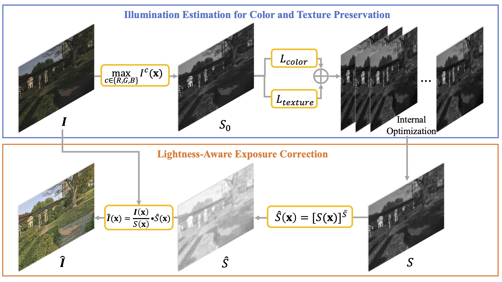

|
Revisit Retinex Theory: Towards A Lightness-Aware Restorer for Underexposed Images Lin Zhang1, Anqi Zhu1, Ying Shen1, Shengjie Zhao1, Huijuan Zhang1 1 School of Software Engineering, Tongji University, Shanghai, China |
Introduction
This is the website for our paper "Revisit Retinex Theory: Towards A Lightness-Aware Restorer for Underexposed Images".
Abstract
Source Codes and Video Dataset
Get the code and dataset. Extraction code: n120
Dependencies
Python3
PyTorch >= 0.4.1
PIL >= 6.1.0
Opencv-python>=3.4
Last update: Jun. 6, 2020